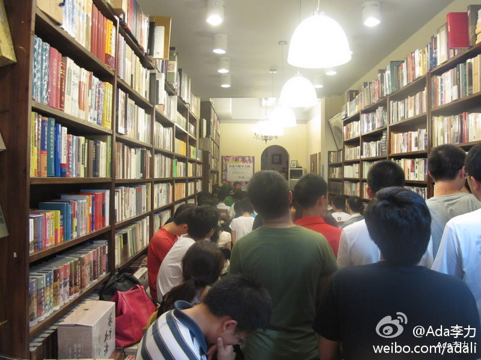

杭州的#甲骨文架构师沙龙#的活动有特点: 讲师邀请中, ADF用户组吴鹏飞请到了王坚 @奥林科技 的创始人和董事长, @TB伏威 介绍的淘宝架构师 @曾宪杰_华黎 . @甲骨文大学 提供了Java架构师认证和培训方面的信息. 参会人员也有吴鹏飞和@陈璐-杭州 的邀请, 刚知道@贺辉群DavidHe 也会到现场. [呵呵]

Ada李力
2011-08-17

Ada李力
2011-08-17
//@Ada李力: 8月18日在杭州办#甲骨文架构师沙龙#活动, 算是弥补了JDK 7 发布活动在杭州没有成行的遗憾. 我这里有五件JDK 7的T恤衫, 都是M号, #架构师#微群里想要的朋友请留下评论, 前5个留言有效. [原文地址： 网页链接 ]
网页链接 ]
Ada李力
2011-08-17
航班上看了“中国民航“上关于航班延误的说明文章，倒是对延误有了些了解。文章最后举了个乘客的模范例子，晚上七点的航班，折腾到凌晨八点才起飞，没水没食物，行李托运走了也没衣物夜里御寒。旅客一直很安静。看完这段，怎么感觉本是服务也的国航口吻象政府。
Ada李力
2011-08-17
豆瓣上得知杭州同城活动今晚有"何帆：讨论公共事务的自由——言论自由在美国最高法院的百年历程", 在晓风书屋. 到杭州已经七点多了, 赶到那里时, 发现战的地方都没有了, 拍张照片, 书店里晃悠一圈, 就出去找地儿吃饭了. 嗯, 算是到此一游.
- 